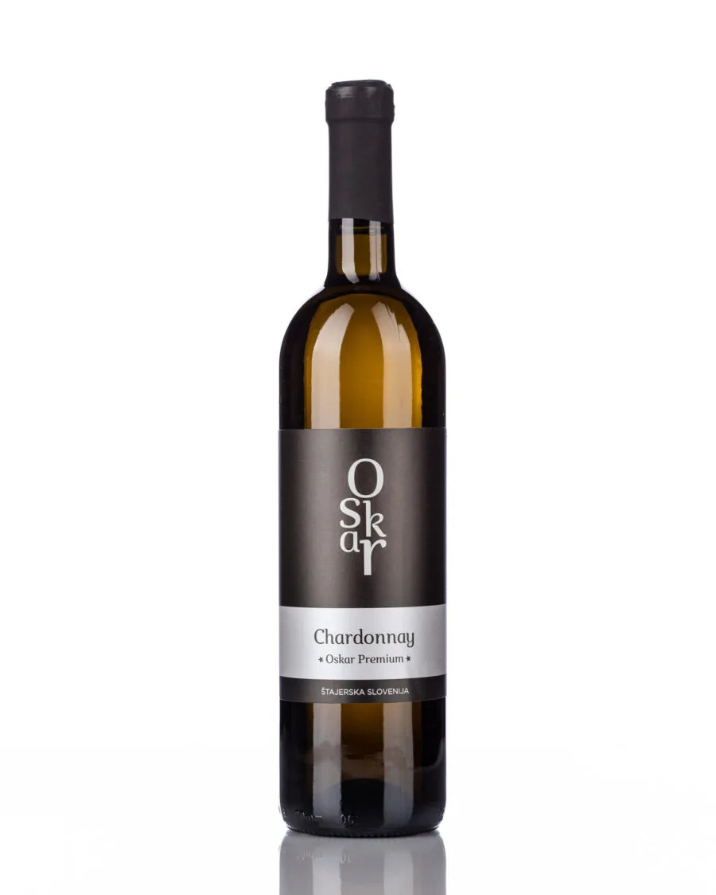
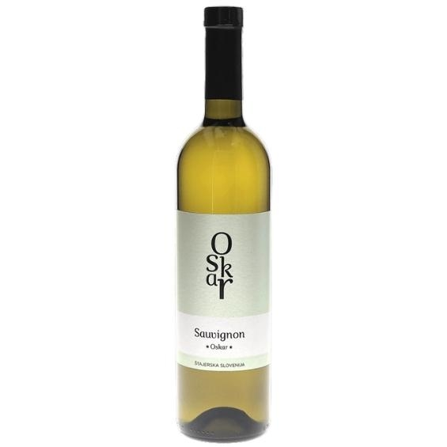

Naša bela vina so lahka, osvežujoča in bogata z aromami. Sončne lege Malečnika, laporna prst ter svež nočni vetrič s Pohorja dajejo grozdju izjemno aromatiko, prijetno mineralnost ter harmonično kislino.

Elegantno vino z bogatim telesom, notami zrelega rumenega jabolka, nežne vanilje in maslene mehkobe ter dolgim pookusom.

Prepoznavna svežina bezgovega cveta, kosmulje, citrusov in paprike. Izrazito sortno vino z mineralnim zaključkom.
Kralj belih vin. Odlikujejo ga prefinjene breskove note, živahna kislina in izjemna eleganca z dolgim potencialom zorenja.